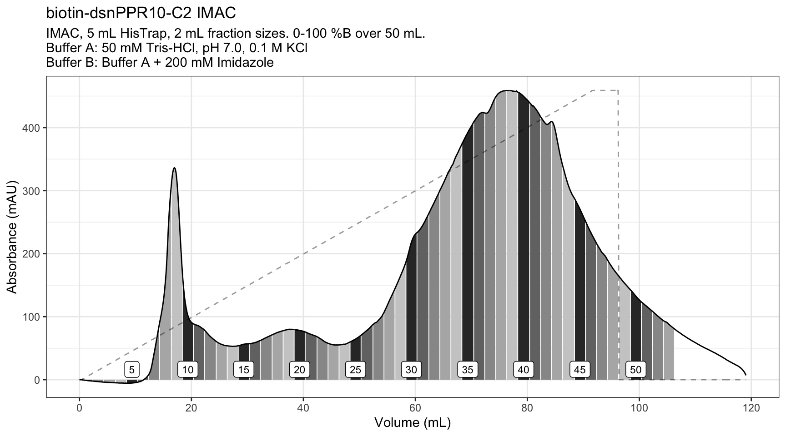
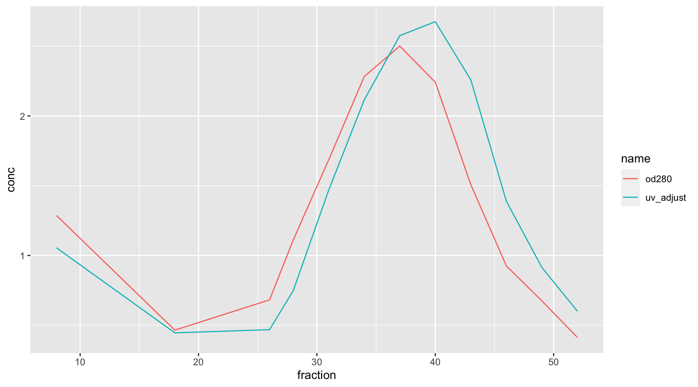
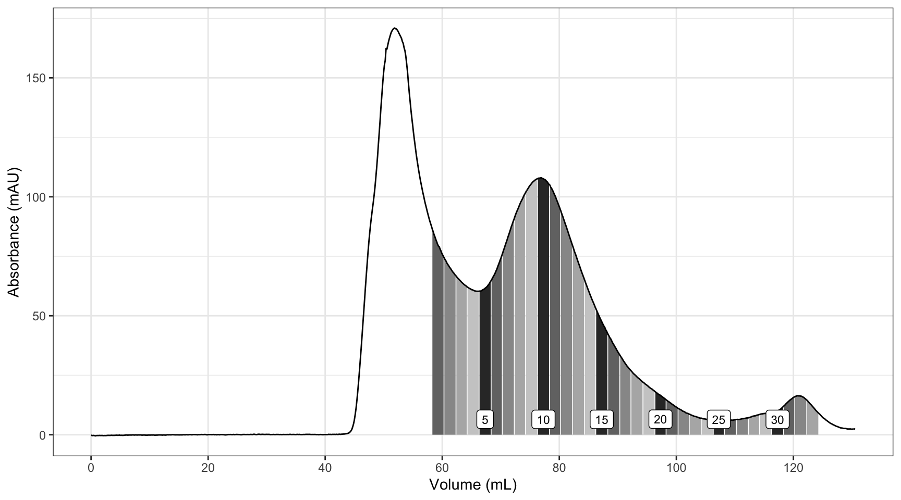

dsnPPR10 Purification


Comparing nanodrop to CatWoman

Making the Plot of the SEC

| fraction | uv | uv_adjust | mg_ml | vol_prot | vol_buff |
|---|---|---|---|---|---|
| 1 | 80.15 | 0.21 | 0.48 | 6.2 | 3.8 |
| 3 | 64.25 | 0.17 | 0.39 | 7.8 | 2.2 |
| 5 | 61.86 | 0.17 | 0.37 | 8.1 | 2.0 |
| 7 | 83.47 | 0.22 | 0.50 | 6.0 | 4.0 |
| 9 | 105.24 | 0.28 | 0.63 | 4.7 | 5.3 |
| 11 | 100.17 | 0.27 | 0.60 | 5.0 | 5.0 |
| 13 | 72.10 | 0.19 | 0.43 | 6.9 | 3.1 |
| 15 | 47.61 | 0.13 | 0.29 | 10.0 | 0.0 |
| 17 | 30.01 | 0.08 | 0.18 | 10.0 | 0.0 |
| 19 | 20.12 | 0.05 | 0.12 | 10.0 | 0.0 |
| 21 | 12.86 | 0.03 | 0.08 | 10.0 | 0.0 |
| 23 | 7.70 | 0.02 | 0.05 | 10.0 | 0.0 |
| 25 | 5.97 | 0.02 | 0.04 | 10.0 | 0.0 |
| 27 | 6.70 | 0.02 | 0.04 | 10.0 | 0.0 |
| 29 | 8.97 | 0.02 | 0.05 | 10.0 | 0.0 |
| 31 | 14.14 | 0.04 | 0.09 | 10.0 | 0.0 |
| 33 | 11.78 | 0.03 | 0.07 | 10.0 | 0.0 |